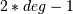
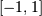
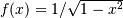
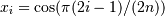
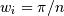

numpy.polynomial.chebyshev.chebgauss¶
- numpy.polynomial.chebyshev.chebgauss(deg)[source]¶
Gauss-Chebyshev quadrature.
Computes the sample points and weights for Gauss-Chebyshev quadrature. These sample points and weights will correctly integrate polynomials of degree  or less over the interval  with the weight function .
Parameters : deg : int
Number of sample points and weights. It must be >= 1.
Returns : x : ndarray
1-D ndarray containing the sample points.
y : ndarray
1-D ndarray containing the weights.
Notes
New in version 1.7.0.
The results have only been tested up to degree 100, higher degrees may be problematic. For Gauss-Chebyshev there are closed form solutions for the sample points and weights. If n = deg, then

